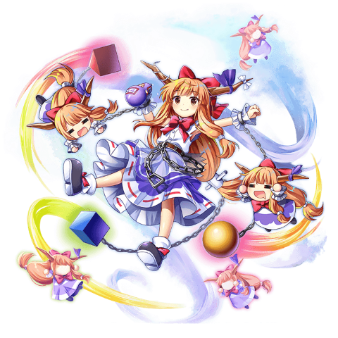

Suika Ibuki
“I've been watching all of you this while time. You all responded to my 'foregathering ability' without noticing, and came to these feasts. Do you know what this means? It means that none of you can defeat me.”
Suika Ibuki is the main antagonist of Immaterial and Missing Power. She's a typical oni that loves drinking and fighting. Just as the folktales say, she has two horns on her head that symbolize her oni heritage, and enough physical strength to throw large boulders single‐handedly.
